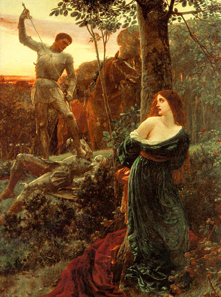

|  |
That's not a typo. I don't mean "Dixie's Chivalry" -- although MT would have appreciated the pun. The iconography of Frank Dicksee's painting, with its foregrounding of the imperiled maiden, struck several English critics as trite when the painting was exhibited, but this set of tropes has yet to lose its popularity, despite the way MT burlesqued them when Hank serves as Sandy's champion in rescuing the sows from the swineherds. |
|
|
|